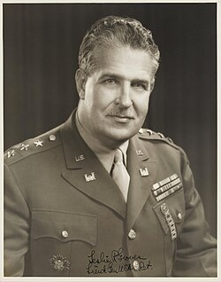

Leslie Groves
Army general, 1896 to 1970

Directed the Manhattan Project for the Army Corps of Engineers. 1
Open in the interactive Watcher
Related
- Manhattan Project Led the Manhattan Project
Sources
- Leslie Groves Wikipedia
Army general, 1896 to 1970

Directed the Manhattan Project for the Army Corps of Engineers. 1
Open in the interactive Watcher